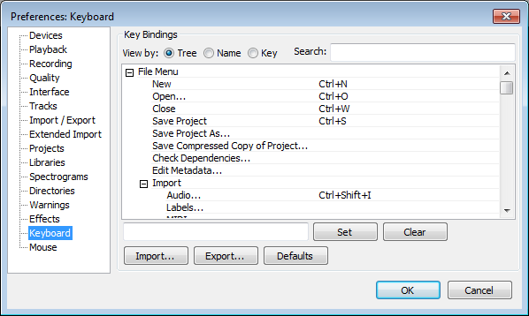

Keyboard Preferences
From Audacity Manual
Audacity comes supplied with a default set of shortcut key bindings but these can be added to, changed or removed here if desired.
- Accessed by: (on a Mac
- 
- Click on any of the other Preferences sections in the above image to go directly to that Preferences page.
View by
There are three ways of viewing the shortcut keys or "bindings" which you can select by clicking on the appropriate radio button. The view chosen when you click to close Preferences is remembered when you access Keyboard Preferences next time.
Tree
This is the default view. On the left-hand side, it lists all the commands to which keyboard shortcuts can be assigned. On the right-hand side, the currently assigned shortcut for each command is shown (if any). The commands are grouped then listed within each group in the same order in which they appear in the Audacity Menu Bar. If a group of items are in a sub-menu within their Menu Bar, that group appears in the tree indented to right as a sub-group within their group. There is a final "Command" category listed in alphabetical order for commands which do not have a Menu Bar entry.
The menu groups and sub-groups ("branches" in this "tree" view) always open fully expanded. You can click on any branch's collapse button to collapse the branch. Any branch which is collapsed can be expanded by clicking on its expand button.
- Use Left arrow when on a group or sub-group's title row to collapse the group or sub-group, or when on an item in an expanded group or sub-group to jump to the title row of that group or sub-group.
- Use Right arrow to expand a collapsed group or sub-group.
- Up arrow and Down arrow navigate up and down the items in "Tree" view and also do so in the "Name" and "Key" views.
To navigate through all commands and title rows starting with a particular letter, type that letter.
Search box: Typing in the "Tree" view search box looks for that text string in a command name, title row or shortcut. You can enter text in upper or lower case (search is not case-sensitive).
- Entering zoom finds the four Zoom items in View Menu and the Zoom Tool command.
- Entering just z finds all menu items or commands that include the letter z, plus shortcuts that include Z.
- Entering +j finds only shortcuts that include a modified "J", so by default CTRL + J, CTRL + ALT + J, ALT + J, ALT + SHIFT + J and SHIFT + J. "Tree" View is the only way to find all shortcuts that use a given modifier letter.
If you have non-default shortcuts and press the button as below to restore the default shortcut set, the search results for your entered text will be updated. Empty the text in the Search box to restore the complete Tree list.
Name
"Name" view lists on the left-hand side all the commands in alphabetical order, with no grouping. On the right-hand side, the currently assigned shortcut for each command is shown (if any).
To navigate through all commands starting with a particular letter, type that letter.
Search box: Typing in the "Name" view search box works similarly to search in "Tree" view, except that the text string you type is searched for only in command names and title rows and not in shortcuts. This can give more focused search results when you really only want to search in the command name.
- Entering shift finds the Effect menu item "Sliding Time Scale / Pitch Shift" and the "Time Shift Tool" command, but excludes all the shortcuts that include the SHIFT modifier.
- Entering just b finds all menu items or commands that include the letter "b", but does not find the "Play to Selection" command with its default shortcut of "B". "Tree" view would find it but the quickest way to find what the "B" command does would be to type it into the "Hotkey" box when in "Key" view (see next section).
Key
"Key" view is the easiest to use to ascertain which keys or key combinations are currently assigned and which are not. By default it lists on the left-hand side all the currently assigned shortcuts in alphabetical order of the shortcut, followed by all the commands that currently have no shortcut assigned to them (in alphabetical order of the command).
To navigate through all shortcuts starting with a particular letter, type that letter.
The "Key" view search box is called Hotkey. To use this, click in or Tab into the box then press the shortcut combination you are searching for, just as you would press the shortcut combination you want to set in the shortcut input box. You can also search for one letter only in the shortcut itself (this excludes searching for that letter in the modifier).
- Pressing CTRL + SHIFT + E when you have default shortcut assignments shows that the command "Export Audio..." is using this shortcut.
- Pressing F6 when you have default shortcut assignments shows that the command "Multi Tool" is using the F6 shortcut and also that "CTRL + F6" and "CTRL + SHIFT + F6" are in use.
- Pressing D when you have default shortcut assignments shows that the command "Next Tool" is using the "D" shortcut, and that one other command ("CTRL + D" for Duplicate) uses the "D" key combined with a modifier.
- Pressing ALT + Y when you have default shortcut assignments shows no result in the list, indicating this shortcut is available to assign to a command.
| You cannot use shortcuts in the Hotkey box to empty the box, for example DELETE. After switching back to "Tree" or "Name" view, you can then use the "DELETE" key or any other method to empty the box and display the complete list. |
Input box, Set and Clear buttons
- To change or add a shortcut binding:
- Click in the list window to select the item you want to change. The entry will be highlighted and the current key combination for that command (if any) will now appear in the input box to left of the button.
- Either click in the input box, or press TAB once to switch focus to it.
- Choose your binding by either holding any modifier key (or combination of modifiers) then pressing any non-modifier key, or press any non-modifier key on its own. Valid modifiers are:
- SHIFT
- CTRL ( CMND on a Mac)
- ALT ( OPTION on a Mac)
- ALTGR or Right ALT (on Windows keyboards, this key sends a combined CTRL + ALT modifier and can thus be used as an alternative to call any binding that includes CTRL + ALT).
As an example, SHIFT + 6 or CTRL + SHIFT + P are both valid bindings. Your chosen key or key combination will now replace the previous content of the input box.
- Click to apply your desired change.
- If your chosen shortcut is already assigned to a command, Audacity will show a dialog asking you to confirm the change. Click to assign your chosen shortcut to the chosen command. This will remove the shortcut for the command that originally used it, leaving that command with no shortcut. Click to make no change of shortcut.
- Clear: To remove a shortcut binding, select the item as in step 1 above, then press .
| You cannot set the main system shortcut for Escape (ESC on Windows or ALT + C on some Linux systems) as a binding. |
Export..., Import... and Defaults buttons
- Export... and Import...: You can export and import shortcut bindings (for example to keep a safe copy of your custom settings, or to transfer them to Audacity on another machine). The button exports your bindings as an XML file, and imports the XML file back again. You can also edit the XML file in any text editor and re-import it, as an alternative to editing the shortcuts in Preferences.
The only entries you can usefully edit are the actual key bindings themselves which are in the "key" string at the end of each command. For example, to set the key binding for "New" to SHIFT + N, the command in the XML file should read:
<command name="New" label="New" key="Shift+N"/>
Be sure not to delete the closing "/>" characters at the end of the command.
- Defaults: Clicking the button reverts all shortcut bindings to those when you first obtained Audacity. This button is handy if you decide you have not got your changes right and want to start over again.
OK and Cancel buttons
- OK: When you have completed your edits press the button to save the new shortcut bindings and exit the Preferences dialog.
- Cancel: If you press the button this aborts the editing. All shortcuts will remain as they were before you started to edit them and the Preferences dialog will be exited.